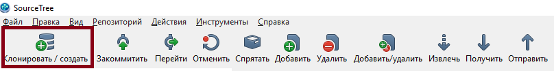
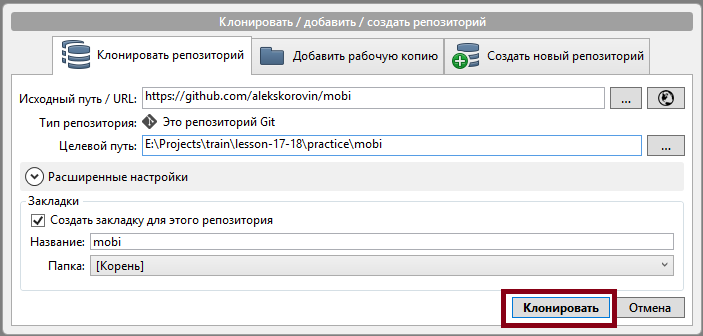
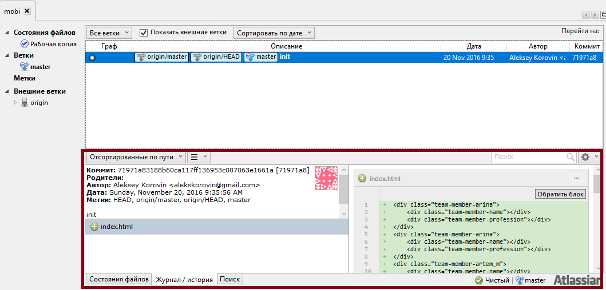
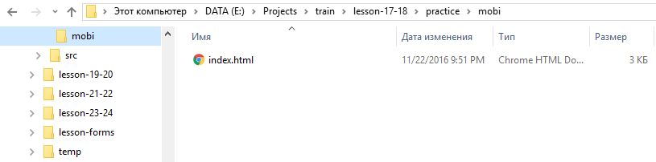

С помощью систем контроля версий возможо скачать самую последнюю версию проекта либо какую-то из предыдущих версий. Перед тем как начинать работу с проектом необходимо скачать последнюю версию, сделать изменения и затем сделать коммит (сохранить изменения) и пуш (отправить изменения в удалённый репозиторий).
Последовательность операций:
- получить (pull, update) — взять последнюю версию кода проекта.
- сделать правки в коде проекта.
- закомитить (commit) — утвердить изменения: написать комментарий к изменениям, выделить файлы которые меняются.
- отправить (push) — отправить изменения в репозиторий.
Работа с репозиторием
Когда репозиторий проекта уже существует, первое что нам надо узнать:
- Какой URL репозитория?
- Есть ли у моего пользователя доступ к этому репозиторию? И если есть, есть ли доступ на запись?
Первый pull (update)
Задание #1.1
- На диске или рабочем столе создать папку mobi.
-
Скопировать URL репозитория:
https://github.com/alekskorovin/mobi - Открыть установленную ранее программу SourceTree.
-
Нажать кнопку Клонировать / создать.
 -
Вставить скопированный ранее адрес репозитория в поле Исходный путь / URL:

-
Заменить автоматически сгенерированный путь на
путь к созданной ранее пустой папке mobi в поле Целевой путь:

-
После указания правильного пути к пустой папке mobi нажать кнопку Клонировать:
 -
После клонирования репозитория в папку mobi нажать на название ветки master:

-
Обратить внимание на последний коммит:
 -
Открыть папку mobi и убедиться что в ней появился файл index.html
